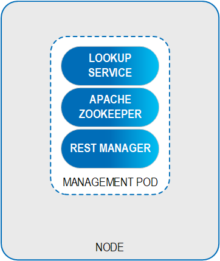
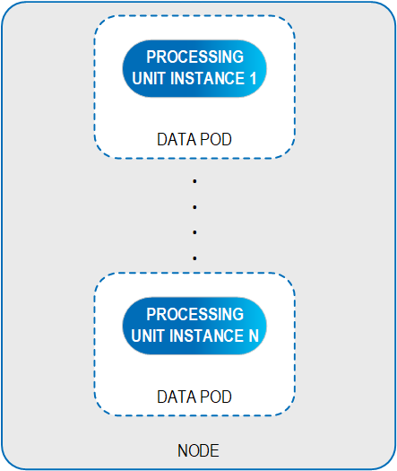
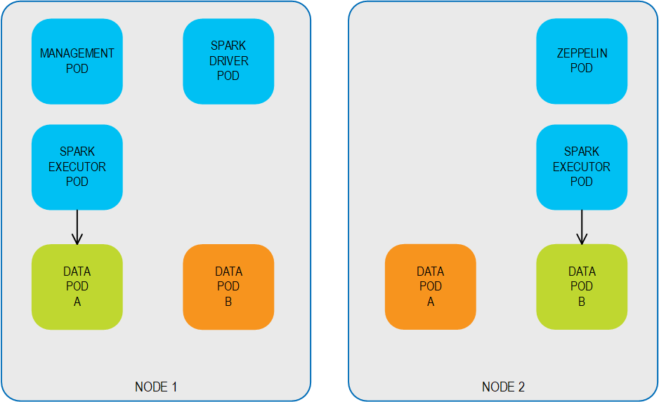
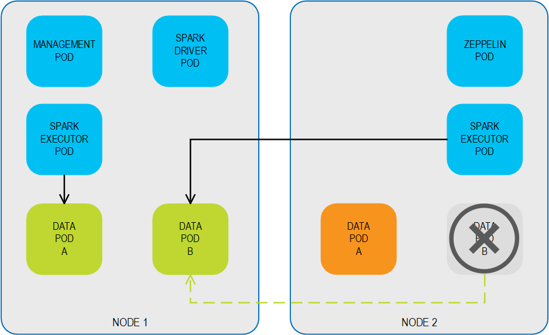
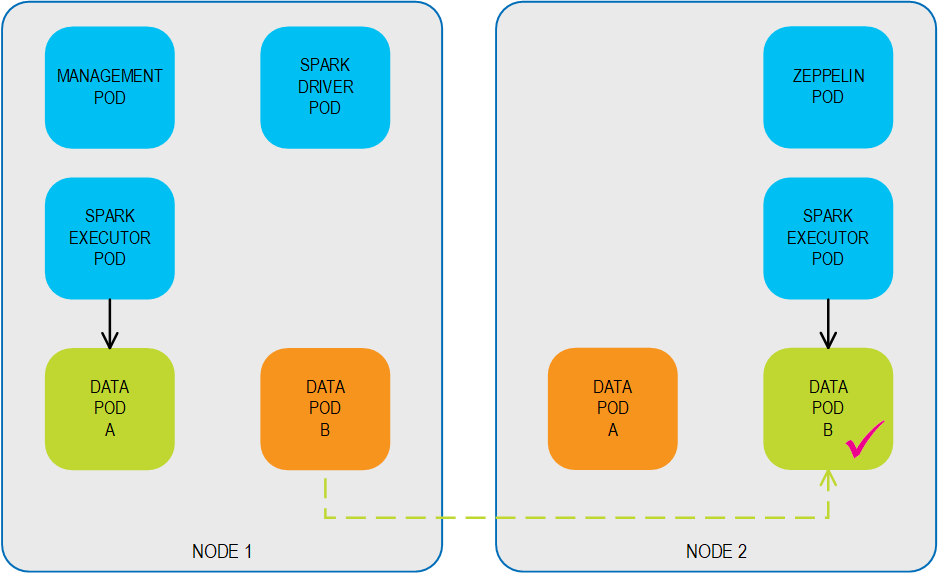
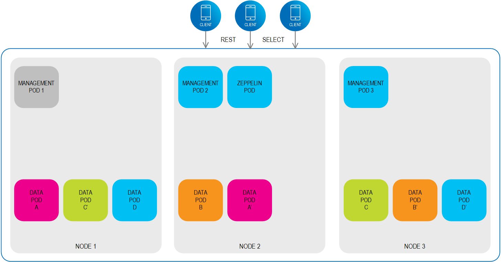
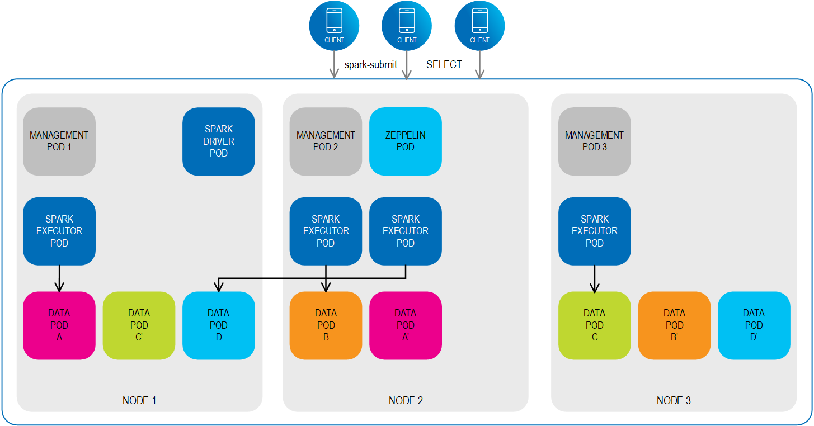

Kubernetes is an open-source orchestration system for automating the deployment, scaling and management of containerized applications. It can be used as an alternative to the GigaSpaces service grid for deploying and orchestrating
Kubernetes works in synergy with
KubeGrid, GigaSpace’s Kubernetes-based deployment option, utilizes the key features of the Kubernetes platform mentioned above to set up and run the data grid. KubeGrid can also auto-deploy data services and frameworks, such as Spark Drivers and Spark Executors, to enable Spark machine learning and Spark SQL.
KubeGrid deploys several components that comprise the data grid.
The Management Pod contains the data grid’s management components. A minimum of one Management Pod is deployed in a regular environment, while three are deployed in a high availability environment.

The Management Pod contains the the following:
The Management Pod manages the Data Pods, which are the fundamental unit of deployment in the data grid. Each Data Pod contains a single Processing Unit instance that provides cloud-native support using built-in Kubernetes controllers, such as auto scaling and self healing.

KubeGrid enforces SLA-driven capabilities that leverage the Kubernetes controllers and schedulers.This enables defining the following for environment stability:
Additional benefits include:
KubeGrid supports automatic Pod failover behavior. The following example describes the failover behavior for a 2,1 primary/backup topology. When Pod anti-affinity is defined, the Pods are distributed over multiple nodes so that each primary/backup pair is hosted on different nodes.

If the primary Data Pod B is disrupted for some reason (either voluntary for scenarios such as rolling upgrades, or involuntary for reasons such as loss of connectivity), the system fails over to the backup Data Pod B, ensuring business continuity. Backup Data Pod B switches roles, and becomes a primary Data Pod.

When the original primary Data Pod B is back up and available, the system can fail back to the restored Data Pod B, which resumes its role as a primary Data Pod.

Kubernetes has native support for Apache Spark. When you submit a Spark application, the following occurs:
The scheduling of the Driver Pod and the Executor Pods is handled by Kubernetes.
In completed state, the Driver Pod doesn’t consume any computational or memory resources.

When the Spark application runs, the Driver Pod and Executor Pods are created according to the schedule that was configured.

The Executor Pods can access the required data objects from any of the Data Pods in the cluster, regardless of which node they reside on. When the Spark jobs are complete, the Executor Pods are cleaned up and the platform is ready for the next submit.
|
|
|
One-click deployment with Kubernetes |